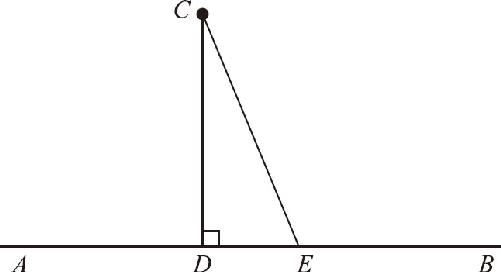
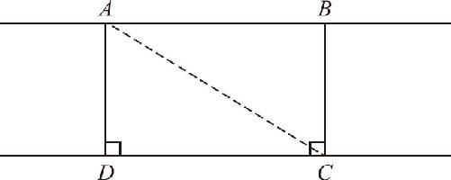
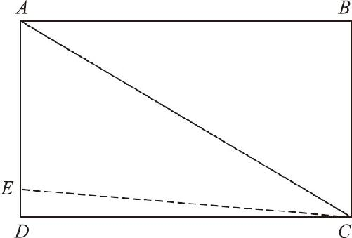
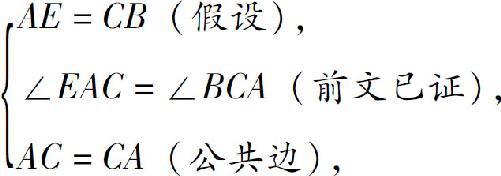
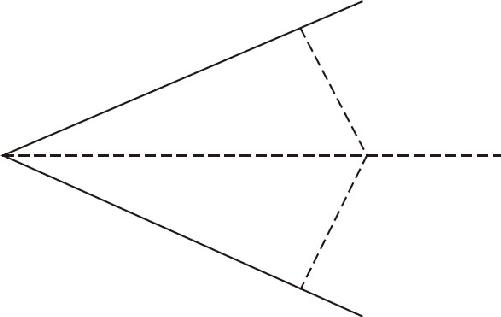

这里，对两个重要的定理进行证明：第一，平行线间的距离处处相等；第二，角平分线上的点到角的两边距离相等．
首先，什么是点到直线的距离？所谓点到直线的距离，就是指直线外一点到直线上所有的点的距离中最短的那个，而距离最短的就是点到直线的垂线段的长度．那么，为什么垂线段最短呢？下面我们就一起来分析．
如图7－1所示，我们先从直线AB 外一点C 画一条已知直线的垂线CD ，然后我们再连结C 和直线上任意一点E ，这样就出现了一条斜线CE ．从图7－1中可以看到，斜线CE 对着的角，就是那个垂足D 所在的直角∠CDE ，而垂线段CD 对着的角∠CED 却是一个锐角，根据大角对大边的道理，肯定是直角对着的斜线CE 更长，锐角对着的垂线CD 稍短．所以我们就用垂线段的长度来表示点到直线的距离．

图7－1
什么是两条直线之间的距离？首先我们知道，两条直线之间的关系分为相交和平行两种情况：如果两条直线相交，两者之间的距离就是不确定的，在交点附近距离近，越是远离交点，两线之间的距离越远，所以这种情况下，讲距离没有意义．那么，平行线之间距离是处处相等的吗？
我们不妨尝试一下，在两条平行线之间任意选定两个位置，画上两条垂线（如图7－2所示），由于同旁内角互补，因此在垂线和平行线之间就形成了一个四个角都是直角的长方形，长方形的长和宽是对应相等的，于是我们就可以知道平行线间的距离处处相等了．但这只是我们的直觉而已，仍然需要逻辑严谨的证明：为什么长方形的长宽是对应相等的？这个问题看似简单，实则非常复杂．

图7－2
在已知的条件之中，找不到任何两条线段是相等的，我们只知道一对平行线和两条垂线，除此之外一无所知．根据这些已知条件，我们能够推导出哪些结论？
∵AB ∥CD （已知），
∴∠DAB ＝180°－∠ADC （两直线平行，同旁内角互补）．
又∵AD ⊥DC ，∠ADC ＝90°（已知），
∴∠DAB ＝180°－90°＝90°（等量代换）．
同理，由BC ⊥DC ，可得
∠ABC ＝∠BCD ＝90°，
∵∠ADC ＝∠BCD ＝90°（已知），
∴AD ∥BC ，
∴四边形ABCD 为矩形（两组对边平行，四个角都是直角）．
我们需要证明AD ＝BC ，但是已知条件中并没有任何线段相等的条件，因此只能构造出两个含有公共边的三角形，利用三角形全等来证明边的相等，因此我们不妨连结AC （如图7－2所示），于是形成了两个直角三角形△BAC 和△DCA ．
∵AB ∥CD （已知），
∴∠BAC ＝∠DCA （两直线平行，内错角相等）．
∵AD ∥BC （已证），
∴∠BCA ＝∠DAC （两直线平行，内错角相等）．
现在，在△BAC 和△DCA 中，已经拥有了三组条件：∠BAC ＝∠DCA ，AC ＝CA （公共边），∠BCA ＝∠DAC ．
三角形的两个角以及这两角的夹边都对应相等，那么这两个三角形是否全等呢？接下来我们可以通过反证法来证明它：
假设AD 不等于BC ，那么，我们就可以在AD 或者其延长线上截取AE ，使得AE ＝BC ，当点E 在AD 内时（如图7－3所示），在△AEC 和△CBA 中：

图7－3

∴△AEC ≌△CBA （边角边全等定理），
∴∠ACE ＝∠CAB （全等三角形的对应角相等）．
又∵∠ACD ＝∠CAB （前文已证），
∴∠ACE ＝∠ACD （等量代换）．
然而，由图7－3可知：∠ACE ＝∠ACD －∠ECD ，
∴∠ACE ＜∠ACD （整体大于部分）．
该结论和∠ACE ＝∠ACD 发生了矛盾，当点E 在AD 延长线上时，同理可证矛盾，所以我们的假设AD ≠BC 是错误的，∴AD ＝BC ．
通过上述证明过程，我们得到了两个结论：第一，平行线之间的距离处处相等；第二，两角及其夹边对应相等的两个三角形全等，该定理是三角形全等的最后一个重要的判定定理，简称“角边角”或ASA．
掌握了角边角定理后，我们还很容易得到一个推论：只要两个三角形有两个角对应相等，一条对应边对应相等，这两个三角形就是全等的．因为三角形只有三个角，而且这三角相加等于180°，如果有任意两个角都对应相等了，那第三对角自然也就相等了，因此，只要知道任何两个角对应相等了，就等于知道所有角都对应相等了，在这种情况下，随便再有一组对应边相等，就可以证明两个三角形全等了，这个推论又叫“角角边”，简称AAS．
截至目前，三角形全等的判定定理一共有四个，分别是三边对应相等（SSS）、边角边（SAS）、角边角（ASA）、角角边（AAS）．那么，怎么样才能快速掌握这么多定理呢？很简单，首先我们要知道，要证明三角形全等至少要有一组对边相等，如果没边只有角是绝对不行的，然后我们再找其他的条件，除了边边角这个条件不行之外，其他条件只要凑齐了三个，全等就一定没问题了．如果记不住怎么样行，我们就记住怎么样不行．怎么样不行呢？没有边不行，边边角也不行．除此之外，只要凑足三个条件，全都可以证明．
接下来我们就讨论角平分线的问题．角平分线上的点到角的两边的距离相等，用的就是角角边的定理．如图7－4所示，在上下两个三角形中：角平分线是一条公共边，被角平分线分开的两个角是一组对应角，同时角平分线上的点到两边的距离是两条垂线，因此两个直角也是对应相等的，于是，我们就凑齐了角角边的条件，也就知道上下两个三角形全等了，所以角平分线上的点到角的两边距离相等．

图7－4
平行线之间的距离处处相等的定理，可以帮我们处理任意形状的面积问题．